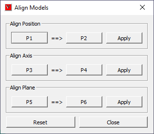
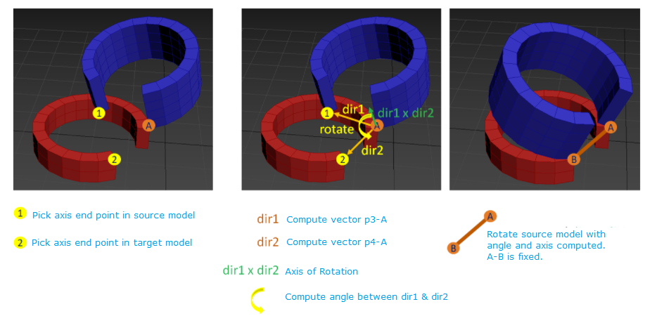

Align Models¶
This section explains how merged models can be aligned and assembled. User can do the following operations. - Align points - Align axis using a line segment. - Align faces.
Note
This option is enabled only if one or more models are merged.
Align Models Panel¶

P1
Point 1 in Model 1
P2
Point 2 in Model 2
Apply (Position)
Aligns P1 to P2
P3
Point 3 in Model 1
P4
Point 4 in Model 2
Apply (Axis)
Aligns P3-P1 line wth P4-P2
P5
Point 5 in Model 1
P6
Point 6 in Model 2
Apply (Plane)
Aligns [P5-P3-P1] plane with [P6-P4-P2]
Reset
Resets the transformation to previous state
Close
Closes dialogbox
Steps to align models¶
Load and merge two or more models
Click Tools | Align Models | 3 Points… option
It pops up Align Models panel
Click P1 button which enables user to pick a point on model
Pick a point from a model. This becomes the source model. So P3 and P5 should be picked from this same model.
P2 is checked or enabeld automatically once P1 is picked.
User can pick P2 from any model other than source model. This becomes the target model. So P4 and P6 should be picked from the same target model.
Click Apply (Position), which aligns P1 to P2

Click P3 from source model and P4 from target model.
Click Apply (Axis), which aligns the lines P1-P3 to the line P2-P4.

Click P5 from source model and P6 from target model.
Click Apply (Plane), which aligns the planes [P1-P3-P5] to [P2-P4-P6].

Click Reset if required, which resets the previous states of models.
Click Close to close the panel.
Note
User should make sure that P1,P2&P3 are picked from same source model and P2,P4 & P6 are picked from target model.